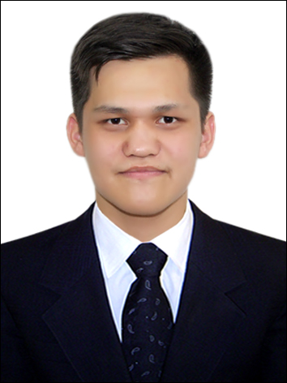

Sattarov Firdavs
Future developer. Currently has no experience, but pattionate about it. A quick learner, open to the challanges and hopes to get a job in the future as a Web Developer

Education:
High School
- 247-Maktab / Tashkent, Uzbekistan / 2019-2021 (Diploma acquired)
University
- BA, Sejong University / Seoul, South Korea / 2022-2026(Expected to Graduate)
Work Experience:
Sales Managment
- Info: Worked for over a year at my father's Grocery Store. Helped to run the business by helping to order products, handling inventory and accounting
Driver Recruiter, Logisticts
- Info: I worked at the company called MD Logistics located at Tashkent, Uzbekistan for about 4 months as a driver recruiter.
Skills:
- Multitasking
- Working under a Pressure
- Working with Team
- Negotiation
Additional Information:
Hobbies
Contact Me